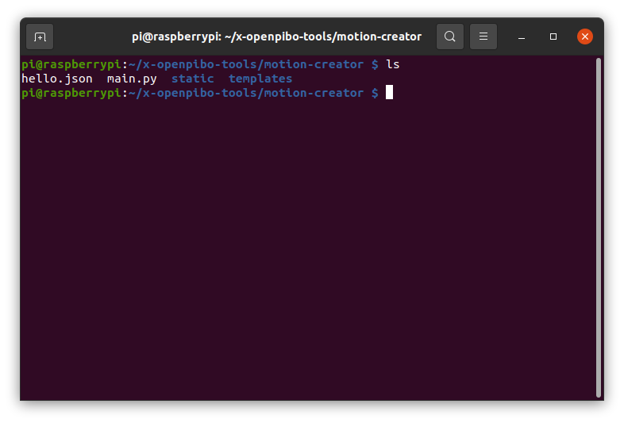

Motion Creator¶
파이보의 동작을 생성하는 툴 입니다.
Chrome브라우저 사용을 권장합니다.
사용 방법
$ cd ~/x-openpibo-tools/motion-creator
$ sudo python3 main.py --port 8888
프로그램을 시작합니다.
--port: 연결할 포트를 입력합니다. 만약 설정하지 않으면, 기본 포트는8888입니다.이후
http://<PIBO IP>:<PORT>에 접속합니다.(출력된 주소를
ctrl + click해도 됩니다)모션을 생성합니다.

왼쪽은 모터를 제어하는 부분이고, 오른쪽은 저장된 모션이 보여지는 부분입니다.
왼쪽의 입력값을 조작하면 파이보의 모터가 실시간으로 움직입니다.
시간을 설정하고 아래 저장 버튼을 누르면 오른쪽 테이블에 동작 하나가 추가됩니다.
(시간은 50ms 간격으로 설정할 수 있습니다.)

동작테이블 각 행에 마우스를 올리면 빨간색으로 변하고, 클릭하면 해당 동작이 삭제됩니다.

동작을 테스트하려면, 우측 상단의
재생버튼을 누릅니다.cycle을 설정해 여러번 반복할 수도 있습니다. (cycle이 3이면, 동작이 3번 반복됩니다.)
우측 하단 입력창에 모션 이름을 적고
Export버튼을 누르면, 코드가 생성됩니다.
또한
/motion-creator/경로에<모션 이름>.json의 이름으로도 저장된 것을 확인할 수 있습니다.
우측 상단의
초기화버튼을 누르면, 기록했던 동작들이 모두 초기화됩니다.
생성한 모션을 사용합니다.
>>> from openpibo.motion import Motion >>> pibo_motion = Motion() >>> pibo_motion.set_profile('hello.json') # 생성된 json 파일 경로 입력 >>> pibo_motion.get_motion() # ['hello'] >>> pibo_motion.set_motion('hello') # 동작 실행
또는 생성한 파일에서 코드를 복사해서 사용할 수 있습니다.